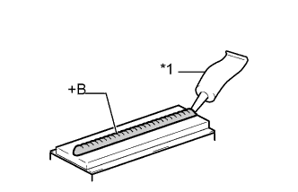

БОКОВОЙ ВОДОСТОЧНЫЙ ЖЕЛОБОК ВДОЛЬ БОКОВОЙ КРОМКИ КРЫШИ > УСТАНОВКА |
| Параметр / Устройство | Температура |
| Кузов автомобиля | 40-60°C (104-140°F) |
| Фиксатор бокового водосточного желобка вдоль боковой кромки крыши | 20–30°C (68–86°F) |
| 1. УСТАНОВИТЕ ФИКСАТОР БОКОВОГО ВОДОСТОЧНОГО ЖЕЛОБКА ВДОЛЬ БОКОВОЙ КРОМКИ КРЫШИ |
|  |
Нанесите герметик (3M DP-105 или аналогичный) слоем толщиной 2-3 мм (0,0787-0,118 дюйма) на новые фиксаторы бокового водосточного желобка вдоль боковой кромки крыши.
| *1 | Герметик |
| *a | Слой герметика: 2-3 мм |
Нанесите грунтовку на кузова, где предполагается установить молдинг бокового водосточного желобка вдоль боковой кромки крыши.
Используя показанное на рисунке положение для справки, поместите фиксатор бокового водосточного желобка вдоль боковой кромки крыши на панель крыши. Затем сориентируйте и закрепите фиксатор, слегка прижав его с тем, чтобы клей сцепился с грунтовкой.
| *A | для передней стороны | *B | для задней стороны |
| Область | Измерение | Область | Измерение |
| a | 4 мм 0,157 дюйма | b | 4 мм 0,157 дюйма |
| c | 11 мм 0,433 дюйма | d | 4 мм 0,157 дюйма |
| e | 4 мм 0,157 дюйма | f | 11 мм 0,433 дюйма |
| 2. УСТАНОВИТЕ ЛЕВЫЙ БОКОВОЙ ВОДОСТОЧНЫЙ ЖЕЛОБОК ВДОЛЬ БОКОВОЙ КРОМКИ КРЫШИ |
Установите боковой водосточный желобок вдоль боковой кромки крыши, закрепив его фиксатором.
| 3. УСТАНОВИТЕ ЛЕВЫЙ ЦЕНТРАЛЬНЫЙ БОКОВОЙ ВОДОСТОЧНЫЙ ЖЕЛОБОК ВДОЛЬ БОКОВОЙ КРОМКИ КРЫШИ № 2 |
Установите центральный боковой водосточный желобок вдоль боковой кромки крыши № 2.
| 4. УСТАНОВИТЕ ЛЕВЫЙ ЦЕНТРАЛЬНЫЙ ВОДОСТОЧНЫЙ ЖЕЛОБОК ВДОЛЬ БОКОВОЙ КРОМКИ КРЫШИ |
Установите центральный боковой водосточный желобок вдоль боковой кромки крыши.
| 5. УСТАНОВИТЕ ЛЕВЫЙ ЗАДНИЙ ВОДОСТОЧНЫЙ ЖЕЛОБОК ВДОЛЬ БОКОВОЙ КРОМКИ КРЫШИ |
Закрепите фиксатор, чтобы установить задний боковой водосточный желобок вдоль боковой кромки крыши.
| 6. УСТАНОВИТЕ СОЕДИНИТЕЛЬНУЮ НАКЛАДКУ ЛЕВОГО БОКОВОГО ВОДОСТОЧНОГО ЖЕЛОБКА ВДОЛЬ БОКОВОЙ КРОМКИ КРЫШИ (для моделей без багажника на крыше) |
Установите соединительную накладку бокового водосточного желобка вдоль боковой кромки крыши, закрепив его 2 зажимами.
| 7. УСТАНОВИТЕ ЛЕВЫЙ БАГАЖНИК НА КРЫШЕ В СБОРЕ (для моделей с багажником на крыше) |
Установите багажник на крыше (Нажмите здесь).